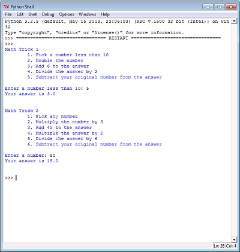
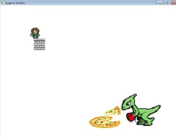
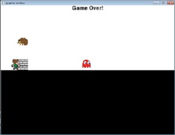
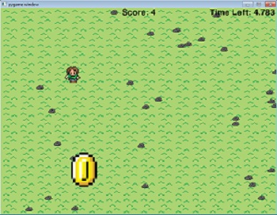
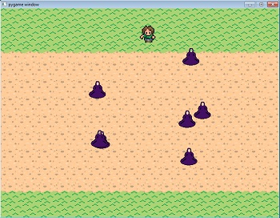

Unit 1

Descriptions of Labs:
For one of the three labs in this unit, we had to create a program that would showcase two different math tricks. The first trick would take a number under ten and do some equations with it as to end with 3. The second trick would take any number, do equations with it, and always end up with the number 15. We had to create a program that would do all these calculations and print the anser on the screen. In the next lab, the goal was to take a users input, such as name, age, etc., and do calculations with these inputs to display the users name, age, and year they were born. The goal of the last lab of this unit was to create a person?image that would move around within a closed screen using the arrow keys. The person was not allowed to leave the screen.
Concepts Learned:
- The basic methods for using python, such as print methods.
- How to recieve input from the user
- Converting strings to integers and integers to strings in order to do calculations.
- The basics for constructing a class.
Unit 2


Descriptions of Labs:
For the first lab in this unit, we had to create a person on a screen and program it using if statement to prevent it from leaving the screen. In the secong lab, the goal was to use the same person from the first lab, but also create an obstacle that the person must collide with. The person image was not allowed to cross in front of the obstacle. Later, we had to use the same programming to create another obstacle and another moving image. In the last lab, the goal was to create an image tha would jump over an object and them move back down to the "ground", still using if statements. Using this, we created a video game, to wich we had to add another obstacle to jump over and a reward later.
Concepts Learned:
- How to import class files into a runner file.
- How to write more advanced class files.
- How to use if statements, else if statements, and else statements.
- How to have objects collide with each other.
Unit 3

Descriptions of Labs:
In this unit, the first lab we had to complete was a timer lab, where we had to create a timer that showed the seconds and minutes of an inputted time decreasing on the screen. The second was to create a program that converts and decodes phrases in Ceasar Cipher. The thrid lab we did had us draw squares and circles decreasing in size on a pygame page. Our last lab in this unit was one where we had to draw grass and random rocks on a pygame screen, a program, we later used to make a game where you had to collect coins on in a certain amout of time in order to win.
Concepts Learned:
- How to use and predict the out put of different loops: for loops, for each loops, and while loops.
- How to print text onto the screen of a pygame program.
- How to create a timer.
- How to create an object in random locations.
Unit 4

Description of Labs:
The first lab we did in this unit was one that had us make a character's costume change as it moves along the screen using lists. The next lab had us use lists to draw an background with both dirt and grass to create a road-like screen on pygame. The last lab had us use the past two lab's instruction to create a game where you have to cross the road while avoiding enemies that appear and move across the road.
Concepts Learned:
- How to create lists using lists or tuples.
- How to have a sprite change costumes using lists
- How to create multiple of the same sprite using a list